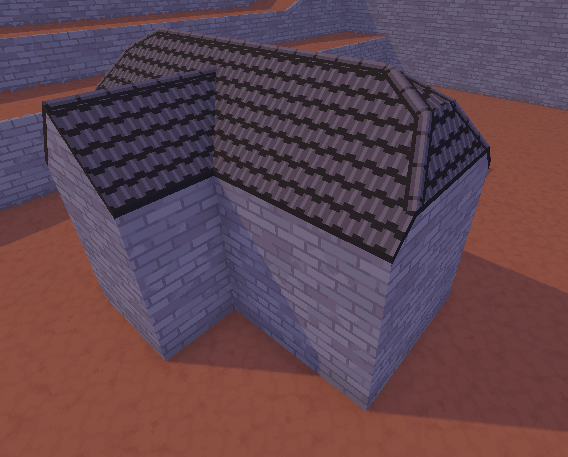
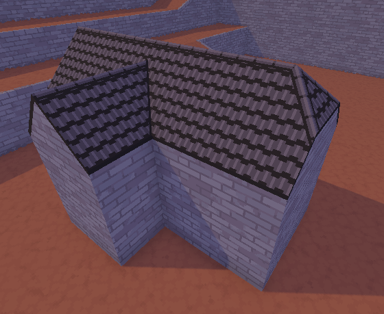

Roofs: rooftiles, ridges and eaves
Every building needs a roof of some kind. In this recipe, we'll be creating a roof surface that we'll decorate with two trims: One for the ridges (the sharp edges at the top of the roof) and one for the eaves (the outer sides of the roof).
This roof recipe lets you make normal straight roofs as well as roofs that are curved, like at the ends of the big roof in the screenshot below.

Here's how you can make a roof like this:
- Start by blocking in a house in your 3D model. For the roof, create a new material. I will simply be calling this material “roof”, but you can use whatever name suits you.
- Reimport the 3D model in Godot. You should see your changes appear. You should also see a warning in the “output” window about AutoTrimmer not recognizing your roof material. Let's fix that.
- First we'll need a rooftile texture. Because rooftiles are supposed to tile, it won't look unnatural if you make a small texture of just a single rooftile. That said, a big texture gives you the opportunity to add some color variation to your rooftiles, if that's what you're looking for, although it's also more work. (Note that AutoTrimmer lets you overwrite small images with bigger images as long as you use the “texture size source” option for your surface instead of the “texture size pixels” option. That means that you can start with a small texture and replace it with a bigger texture later)
- Turn the rooftile texture into a Godot material. How you do this is up to you. You can either use a StandardMaterial3D or a ShaderMaterial.
- Now, let's add the roof surface to your rulebook.
- Add a new surface to your rulebook.
- Change its name to match the name of the material in your 3D model exactly. Capitalization also has to match!
- Put your Godot material into the “replace with material” option.
- Set “UV unwrap mode” to “unwrap”.
- Put your rooftile texture into “texture size source”.
- Enable the option “may mirror texture to line up” (otherwise it won't line up with the roof on the other side of the ridge)
- Reimport your 3D model. If the rooftiles are looking like they should, we can move on to the trims.
- Let's start on the trims! We're going to make two trims:
One trim is going to be the ridge (the sharp top edge of the roof),
the other two trim is going to be used for the eave
(the lower edge of the roof).
- Add a texture for the ridge trim to your trimsheet.
- Add a texture for the eave trim to your trimsheet. I will be using a very simple two pixel wide black line for this. A nice idea is to add some half-transparent black lines underneath for fake shadows. I did that for the church demo.
- We'll need to add the trims to the rulebook next.
- Create two new trims. I will be calling them “ridge” and “eave”.
- Configure both trims to use the right texture.
- For the ridge trim, add the roof surface to the whitelist. This prevents the ends of its trim from extending a little bit onto walls when the angle difference is very shallow.
- For the ridge trim, enable the option “may mirror texture to line up” (otherwise it won't line up with the ridge on the other side of the edge)
- We'll need to add some edge rules so that the trims will show up on
the 3D model.
We'll start with an edge rule for the ridges.
- Create a new edge rule.
- Set both “add trim here” and “add trim at neighbor” to your ridge trim.
- Paste the following code into the condition, replacing “ROOF” with the
UPPER_SNAKE_CASE
name of your roof surface.
(This condition uses changes in texture direction to see where we need to add ridges. Check the documentation on uv_dir if you'd like to know more. Furthermore, theself.surface == ROOF and neighbor.surface == ROOF and self.uv_dir !~= -neighbor.uv_dir and angle > 10!~=operator is the “not approximately equal” operator) - Reimport the mesh. Your ridges should show up now!
- Lastly we'll add the eaves.
- Create a new edge rule.
- Set “add trim at neighbor” to your eave trim.
- Paste the following code into the condition, again replacing “ROOF” with
the right name for your roof surface.
self.surface == ROOF and neighbor.surface != ROOF and angle > 10 - Reimport your 3D model. You should now have a pretty decent looking roof!
I've made a roof of black rooftiles here, but you can use the same steps for lots of different types of roofs. You can also add multiple variations of roofs to your project for some extra variety.
Optional: A trim for the concave corners
For me, the roof is already looking pretty good as it is, but in the screenshot up top you can see a UV seam where the small roof on the side meets the bigger roof. It doesn't really bother me, but if you want, we can cover it up with a thin line.
Notice the little black line in the concave corner of the roof.

It's a small difference, but if you think it's worth your time, here's how you do it:
- Add a black line to your trim sheet (if you also did the eave as a black line, you can also reuse a one-pixel-tall part of that texture instead of making a new one).
- Add a trim for your black line.
- Give it a name. I called mine “roof_concave”.
- Configure the texture.
- Optionally give it a whitelist. I personally didn't find this necessary.
- Now let's add the edge rule.
- Set “add trim here” to your new trim.
- Paste in the following condition, again adjusting “ROOF” as needed:
self.surface == ROOF and neighbor.surface == ROOF and self.uv_dir !~= -neighbor.uv_dir and angle < -10 - Reimport your 3D model. You should now see a little trim on the concave corners of the roof.